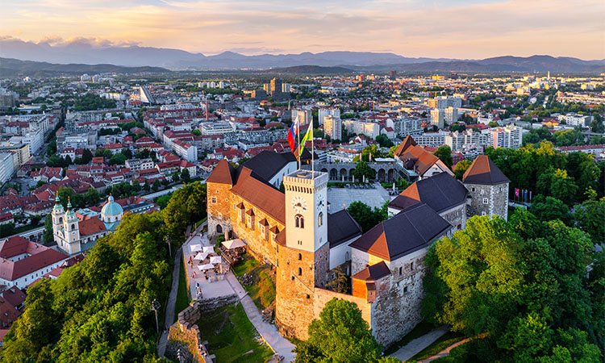
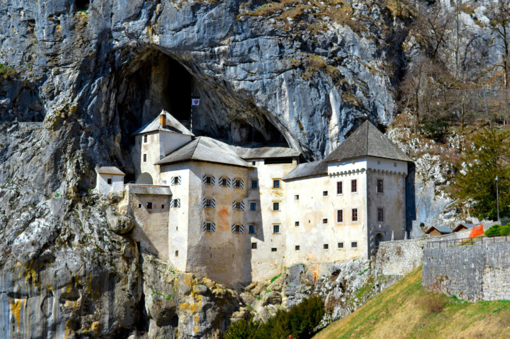
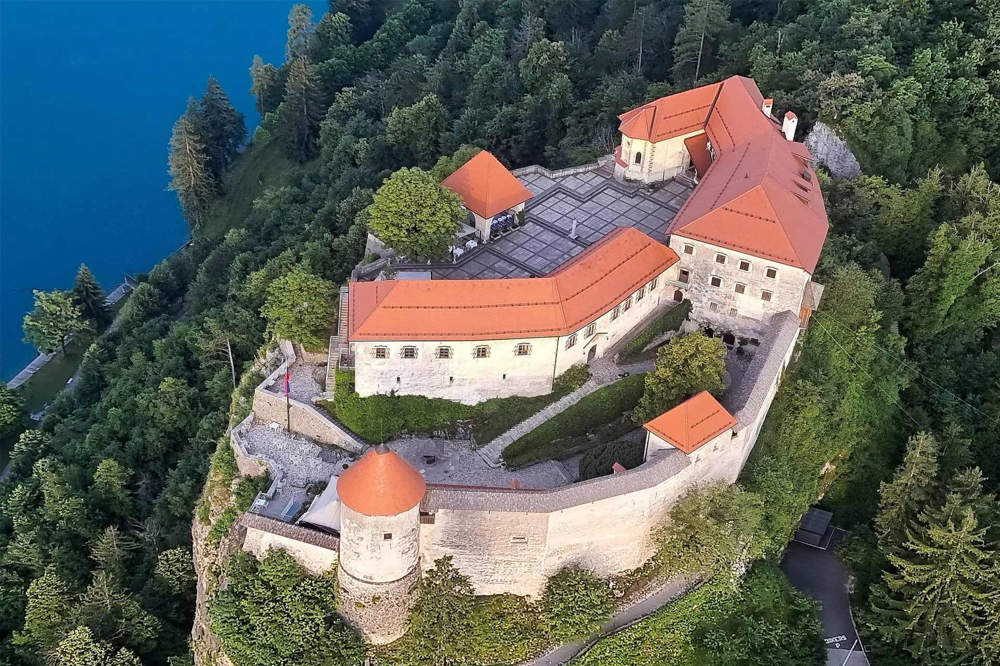
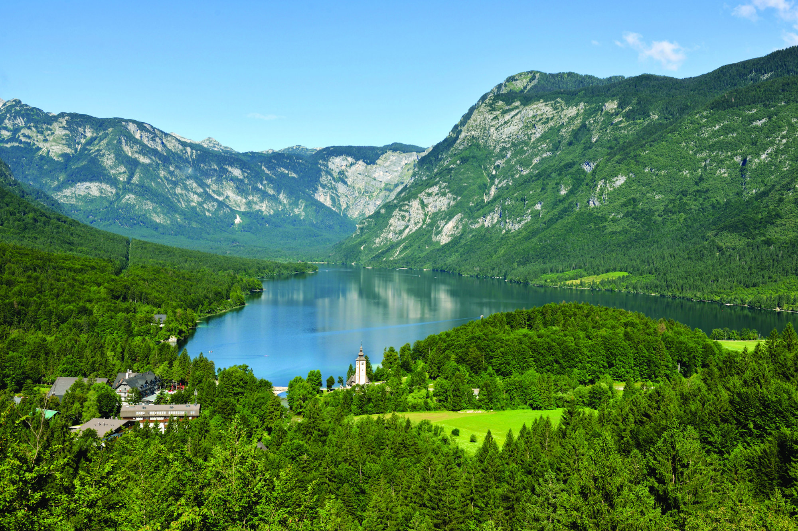
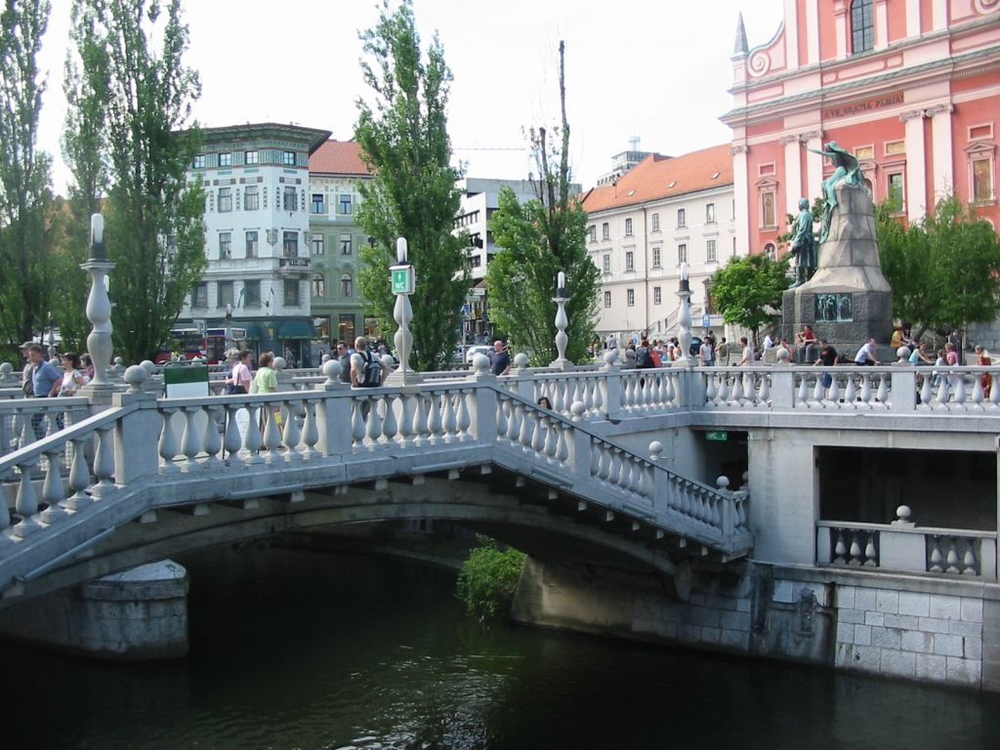
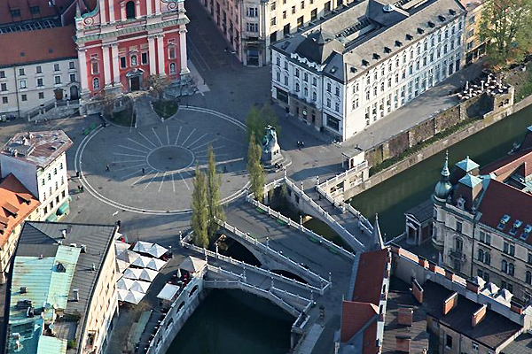
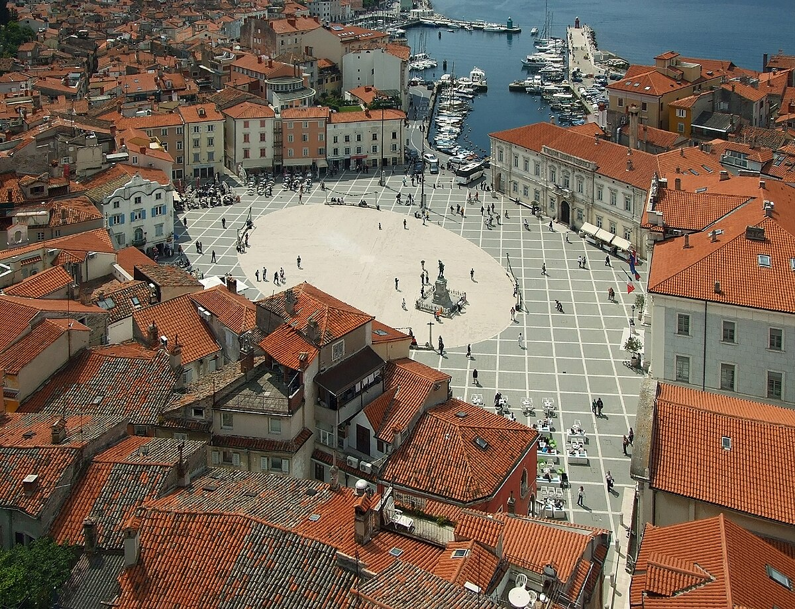
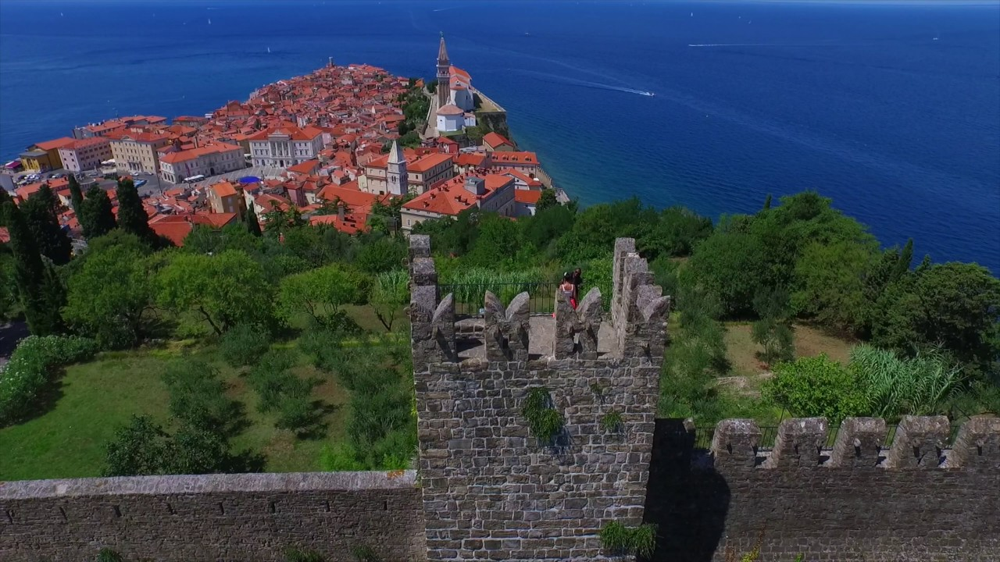

Ljubljana Castle


Ljubljana Castle, perched atop a gentle hill overlooking Slovenia’s charming capital, is a sentinel of history and imagination. Its
ancient walls and towers tell tales of medieval knights, royal intrigue, and city life through the centuries. Wander through its
courtyards, admire panoramic views of the terracotta rooftops below, and let the castle’s timeless charm transport you to a world
where past and present intertwine. A visit here is a poetic journey into the heart of Ljubljana’s soul.
Best time to visit:
Spring and summer mornings for fewer crowds and clear city views; evenings for sunset over Ljubljana.
Opening hours:
Daily, 10:00–20:00 (summer may be longer); last entry 30 minutes before closing.
Entry:
Ticket required for castle tower, museum, and funicular (€10–€15 adults, discounts for children and students). Some outdoor areas are free to
explore.
SEE MAP
Predjama Castle


Predjama Castle, dramatically perched within the mouth of a towering cliff, is a marvel where nature and human ingenuity entwine. Its
stone walls emerge from the rock itself, hiding secret passages and whispering stories of knights, legends, and daring escapes.
Explore the castle’s chambers, imagine life in its shadowed halls, and let the breathtaking setting ignite your sense of adventure.
A visit here is a journey into Slovenia’s medieval spirit, where history feels alive and extraordinary.
Best time to visit:
Spring to autumn for clear paths and better lighting; mornings are quieter.
Opening hours:
Daily, 9:00–18:00 (longer in summer); guided tours available at set times.
Entry:
Ticket required (~€13 adults, €7 children). Cave areas included in ticket; separate guided tours may have additional cost.
SEE MAP
Bled Castle & Lake Bled


Bled Castle, majestically overlooking the emerald waters of Lake Bled, is a fairy-tale vision come to life. Perched on a cliff, its
red-roofed towers watch over the lake’s iconic island and church, reflecting centuries of history and legend. Wander through its
museum halls, sip in the panoramic views, and feel the timeless charm that has inspired poets and travelers alike. A visit here is not
just sightseeing—it’s stepping into Slovenia’s storybook beauty.
Best time to visit:
Spring and summer for boating and walking; early morning or late afternoon for photography and fewer crowds.
Opening hours:
Bled Castle – Daily, 8:00–20:00 (longer in summer). Lake Bled – accessible all day.
Entry:
Bled Castle – ticket required (~€13 adults, €8 kids). Lake Bled – free; boat rides and activities have separate fees.
SEE MAP
Lake Bohinj


Lake Bohinj, cradled within the heart of the Julian Alps, is a serene sanctuary of nature’s purest beauty. Its crystal-clear waters
mirror towering peaks and verdant forests, offering a peaceful escape from the bustle of everyday life. Whether you kayak across its
glassy surface, hike the surrounding trails, or simply breathe in the alpine air, Lake Bohinj invites every traveler to experience
Slovenia’s untouched, poetic splendor.
Best time to visit:
Late spring to early autumn for hiking, swimming, and clear views; early morning for serene reflections on the water.
Opening hours:
Accessible all day; popular hiking trails may have seasonal access.
Entry:
Free; some parking areas may require a small fee.
SEE MAP
Tromostovje (Triple Bridge), Ljubljana


Tromostovje, or the Triple Bridge, is Ljubljana’s iconic architectural gem, gracefully connecting the city’s historic old town with
its vibrant modern heart. Comprising three elegant bridges side by side, it offers a poetic passage over the Ljubljanica River, where
cobblestones meet flowing waters. Stroll along its span, watch the river shimmer beneath, and feel the rhythm of the city unfold—a
perfect blend of history, art, and lively urban charm that captures the soul of Ljubljana.
Best time to visit:
Early morning for fewer crowds or at sunset for a picturesque view of the Ljubljanica River.
Opening hours:
Open all day, pedestrian-friendly.
Entry:
Free to cross and enjoy the surrounding area.
SEE MAP
Piran – Tartini Square & Town Walls


Piran’s Tartini Square and its ancient town walls are the heart and soul of this Adriatic jewel. Named after the famous violinist and
composer Giuseppe Tartini, the square pulses with life—cafés, historic buildings, and the gentle hum of the sea in the background.
Wander along the medieval town walls that embrace the city, offering panoramic views of red-tiled rooftops and the sparkling Adriatic.
Every step here feels like a stroll through a living postcard, where history, music, and coastal charm meet in perfect harmony.
Best time to visit:
Early morning or late afternoon to avoid crowds and enjoy the soft light over the Adriatic.
Opening hours:
Square: open all day.
Town Walls: approx. 9:00–19:00 in summer, shorter hours in winter.
Entry:
Square: free.
Town Walls: small entrance fee (~€3–5).
SEE MAP